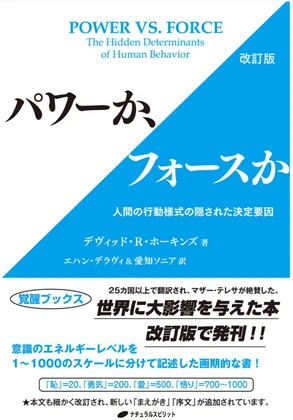

- 人を動かす力は2つある。フォースは押す力、パワーは引きつける力。
- フォースには燃料がいる。押せば相手も押し返すので、続けるほど減っていく。パワーは外から支えなくても働き続ける。
- 同じ行動でも、その根にあるのが「やらなきゃ」なのか「こうしたい」なのかで、続くかどうかが変わる。
まず、本の話この本は、何の本か
原題は POWER VS. FORCE。副題は「人間の行動様式の隠された決定要因」。つまり、私たちを動かしている力の正体は何なのか、という本です。
本文からフォースとパワー
今回取り上げるのは、本の軸になっている「フォース」と「パワー」の違いです。本はこの2つの力を、徹底的に対比させます。
| フォース | パワー |
|---|---|
| 常に正当化されなければならない | 正当化される必要がまったくない |
| 「ここからあちらへ」押す動き | 動かないフィールド |
| 絶えずエネルギーを注がないと保てない | 外から何も必要としない |
| エネルギーを奪い去る | 与えながら前進させ、支える |
| 満足をもたらす | 喜びをもたらす |
言葉だけだと分かりにくいのですが、本に出てくる重力のたとえで腑に落ちました。
重力って、目には見えませんよね。手を離したら物が落ちる、持ち上げたら重い。そうやって結果のほうで、あとから分かる。重力そのものを見た人はいません。
重力そのものは何に対しても動きませんが、そのパワーは物質すべてをそのフィールド内で動かすことができます。しかし、重力のフィールドそのものは動きません。
パワーか、フォースか 改訂版／デヴィッド・R・ホーキンズ（ナチュラルスピリット）
しかも重力は、何かをしているわけではありません。物を引っ張りに行かないし、追いかけもしない。ただそこに在るだけです。
なのに、その場にあるものは全部動く。押していないのに、動く。
フォースはこの逆です。押している人がいて、押されている物がある。目に見えます。そして押している間だけ動く。手を離したら止まる。
しかも押せば、必ず押し返されます。抵抗が生まれるので、押し続けるためのエネルギーが要り続ける。
本にも「フォースは五感を通して経験されますが、パワーは内部の意識から生じる」と書かれていました。フォースは見える。パワーは見えない。見えないけれど、効いている。
本の結論は、一行でこう書かれています。
パワーは人を強くし、フォースは弱くします。
私の気づき自分は、何を燃やして走っているのか
読みながら考えたのは、目標の話でした。
たとえば「お金持ちになりたい」という目標があったとして、なんでそう思うんだろう、と掘ってみる。すると、こういうものが出てくることがあります。
昔すごく貧しい思いをした。二度とあんな思いをしたくない。
この悔しさ、持っていていいと思うんです。実際、それで走れる。すごく走れる。
ただ、これはフォースの燃料だな、と思いました。そしてフォースの燃料には、いつか限界が来る気がしています。
理由は、本に書いてあるとおりです。絶えず注ぎ続けないと走れないから。燃やし続けるので疲れるし、満足はしても、満たされない。
もっと言うと、燃料になっているのがまだ解消されていない過去だからだと思います。傷ついたときのまま、心の中に置いてある。それを燃やして走っている。
上書き保存はできない
だったら、成功を積み上げて上書きしてしまえばいいじゃないか、とも思いました。でも、たぶんそれはできません。
元が変わっていないからです。上から取ってつけたようになって、中身は空っぽのまま。だからいくら積んでも埋まらない。
必要なのは上書きではなく、清算なんだと思います。
- 01当時あった出来事を、本当に許す
- 02そのとき傷ついた自分を、許してあげる
- 03締めくくりを書き換える
締めくくりというのは、物語の終わり方のことです。「あんな思いは二度とごめんだ」で終わっているものを、あの経験があったからこそ、自分はここまで来られたに変える。
そこで物語が完結する。完結すると、燃やし続けなくてよくなる。たぶんそこから先が、パワーの側なんだと思います。
もう少し深掘ってみた200の境界線
この感覚、本にちゃんと書いてありました。意識のマップの中に、はっきりした分かれ目があるのです。
200（勇気）。ここで初めて、フォースからパワーに切り替わると書かれています。
- 200未満自分が生き残るためだけに、自分のエネルギーが使われる
- 200以上他人の幸福が、不可欠な原動力となって現れる
「二度とあんな思いをしたくない」は、まさに生き残るための動機です。だから200の下にいる。
そして勇気のレベルについて、こう書かれていました。
もっと低いレベルでは、世界は絶望的なもの、悲しいもの、恐ろしいもの、もしくは腹立たしく思えます。しかし、勇気のレベルでは、人生はおもしろく挑戦的であり刺激があるように見えるのです。
同書
同じ世界を見ているのに、見え方が変わる。そしてこう続きます。
このレベルにいる人は、自分が得るものと同じくらい多くのエネルギーを、世間に返すのだそうです。
現場に置いてみる朝の掃除で考えてみる
同じ掃除でも、こうなると思うんです。
フォースの掃除
「やらないといけないから」やる。言われた日はやる。言われなくなったらやらなくなる。言い方を強めると反発される。言う側も疲れる。
パワーの掃除
「お客様に気持ちよく来店してもらうには、どういう空間がいいだろう」から始まる。だから今日はここを拭いておこう、となる。
後者がいいのは、そのあとが続くところです。
いい気持ちで掃除をして、いい気持ちでお客様を出迎えて、お客様がいい気持ちで帰っていく。思いが循環する。
本にも、パワーは「与えながら前進させ、供給し、動かし、サポートする」と書かれていました。与えると減らずに回る。フォースのほうは「絶えず消費してしまう」。
やっていることは同じ掃除なのに、片方は減って、片方は回る。
読んでいて、改めて感じたこと「なんか楽しそう」で止めない
この本を読んで改めて感じたのは、自分の「やりたい」を、一度掘ってみたほうがいいということでした。
一見いい目標でも、根っこに何があるかは分かりません。逆に、嫌だなと思ったときも、何が嫌なんだろうと突き詰めてみる。
「なんか楽しそう」で止めない。なんで自分はそう思うんだろう。過去を探してみる。
やってみると、ワクワクにも種類があることに気づきます。ある出来事がやけに心に残っていて、なんでこんなに残っているんだろうと思うことがある。そこを掘ると、たいてい何か出てきます。
難しく考えなくていいと思っています。たとえばこの記事を読んで何か感じたら、それを書いてみるところからでいい。人それぞれ生きてきた道が違うので、感じ方も違って当たり前です。
その積み重ねなんだろうな、と思いました。
いま「やりたい」と思っていることを、ひとつ掘ってみると、根に何がありますか？
「なんでそう思うんだろう」を、3回くらい繰り返してみてください。

原題 POWER VS. FORCE。25カ国以上で翻訳された本の改訂版
今回ふれたのは「フォースとパワーの違い」と「意識のマップ」です
デヴィッド・R・ホーキンズさん。アメリカの精神科医です。アメリカ精神医学会の終身会員で、ノーベル賞受賞者のライナス・ポーリング博士と医学書を共著しています。テレビにも出て、オプラ・ウィンフリーのインタビューも受けている。
その人が、後半生を「意識」の研究に費やしました。宗教団体の顧問も務め、国際紛争の解決にも関わっています。
精神科医 → 意識の研究者。そういう経歴の人が書いた本です。